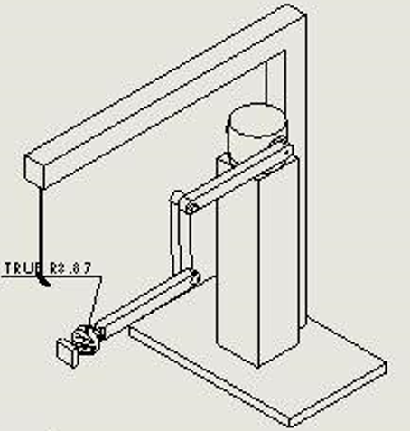
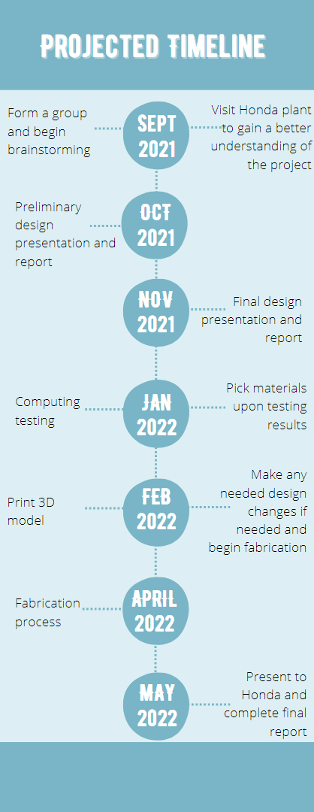

Abstract
The Honda team worked together to create a tilting table. So, the Honda workers could slide the car doors onto the table and check for any imperfections. The table can then tilt downwards to slide the car door to the carts.
Problem Statement
Determine the best method to eliminate the manual lifting of front and rear doors to perform quality checks.
Brainstorm
Ideas
Preliminary Design
Assumptions: door weight 35lb, magnet weight 1.3 lb, magnet dimensions 3.4 x 2.8 x 1.8 inches, pull force 800N, max length of the arm extended 8.11 ft, need door dimensions, A moment is defined as the length times the weight. With this formula we found that the base needs to be able to withstand a moment force of 283.85 LBF. The arms should not be extended to this length so if we design the base to withstand this force then the door should be able to handle the force that we will be putting on it. We have also added a safety bar with a hook to attach to the door in case the magnet fails.

Final Design
Our design has greatly changed from the brainstorming phase. The original design had a pneumatic arm that would reach out and grab the door for testing. The new design involves a tilting table. There have been multiple revisions with this design involving the type of material it would be manufactured with, different gear designs and how the gear attaches to the table, multiple motor configuration designs, how the rod attaches to the table. Due to the original idea being completely changed, the schedule, cost, and responsibilities for the project had to be greatly changed. We had some difficulty finding a replacement motor that met our specifications after it was determined that we would be unable to buy the original motor that we intended, which created a significant delay. The overall cost of the project decreased dramatically with our completely new design.